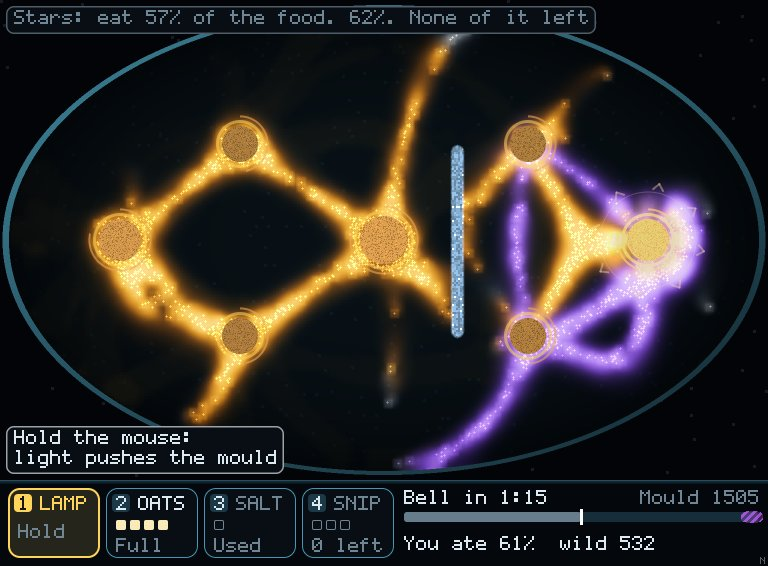
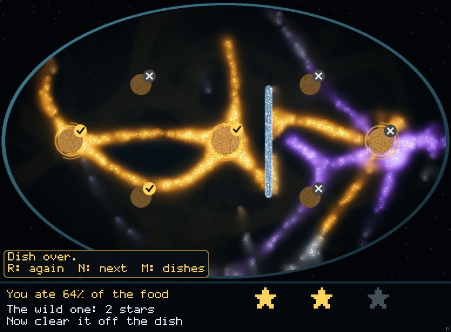

Mould · The Wild One · fixes from review 2 · 10 Nov 2026
The review found the old score, mould left at the bell, swinging by up to half in the last ten seconds as four piles ran dry together. Now the dish counts every bite each mould takes all game, and you win stars for your share of it. A crash at the end can't move a running total.


Seed 1, tool hand: you ate 93,886 food, the wild one 52,017 (64%). 1,699 of yours and 1,830 of its walkers died fighting.
Your share of all the food eaten, 8 seeds each, lowest to highest.
| Hand | Your share | Stars |
|---|---|---|
| Doing nothing | 0.494–0.526 | 0 on 8 |
| Random tools | 0.467–0.559 | 0 on 8 |
| Tool hand, lets go at 0:30 | 0.567–0.577 | 1 on 7, 0 on 1 |
| Tool hand, clumsy (6 cells off, looks every 2 s) | 0.575–0.584 | 1 on 8 |
| Tool hand, 3 cells off | 0.583–0.616 | 1 on 8 |
| Tool hand, exact | 0.642–0.722 | 2 on 5, 3 on 3 |
Exact tool hand beats doing nothing and random 8–0 each (p 0.008). The margins either side of each bar are under one point, so a wider sweep should check them.
Also fixed: salt kills now count as salt, not snips; a pile's last bite can't be eaten twice; the wild count is current; the score stops at the bell, so the bar matches the card.